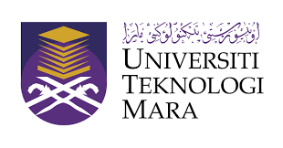
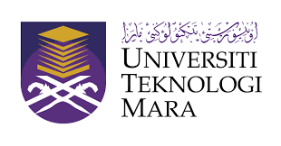
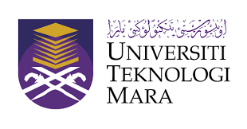
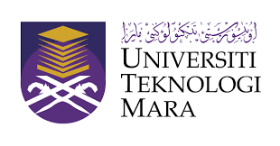

Iam starting my primary school at Sekolah Sungai Rapat. There a lot of sweet memories.When I in primary I not quite active because I have asthma attack, it quite often in primary school. But,I strong person I want to going out play with friends because I not quietly person. Until,I enter the secondary school at SMK Rapat Setia. I was became the prefect school,so of course the prefect must active in school. Iam very grateful because I can show my talent when I take responsibility as prefect schools, the teachers believe and put trust on me whatever job their give to me. What I can say,secondary school I more familiar and quite famous because I quite often became the announcer when the monday assembly. Lastly,I got 2A 4B 3C I apply the UITM and Iam here in UITM cawangan Kedah. For the first time, I got I want to reject but I thought I just try enter the UITM since only me in my classroom got UITM. Most of my friends, got the Politeknik and some of them going private and KPTM,KPM. Iam very grateful become the half of UITM family. For this last semester, I must do my best and study smart and Insyallah I will got the good results and pointer. That all from me.